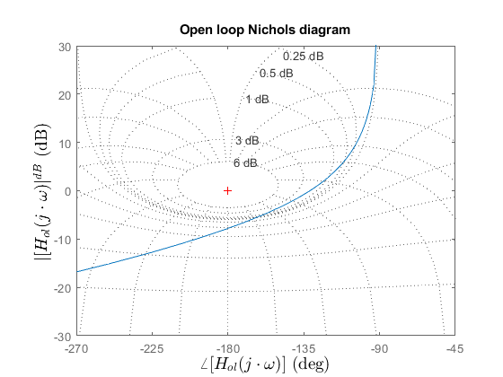
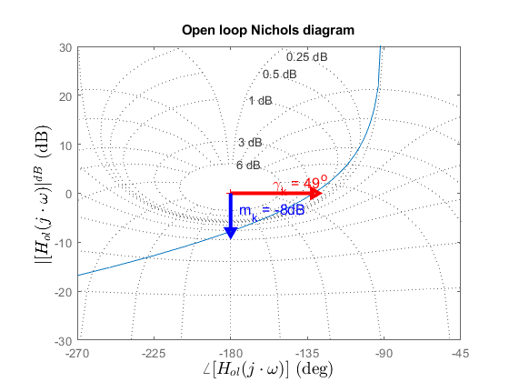
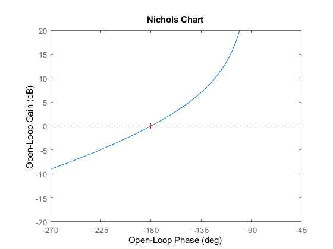
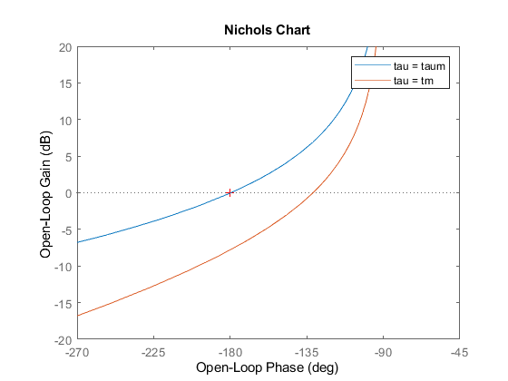

Contents
Nichols diagrams
close; clc; clear; % defining the system k = 0.05; %proportional controoller tm = 0.015; %time delay H = tf(9e4, [1 135 0], 'iodelay', tm); display(H); Hol = k*H; display(Hol);
H =
90000
exp(-0.015*s) * -----------
s^2 + 135 s
Continuous-time transfer function.
Hol =
4500
exp(-0.015*s) * -----------
s^2 + 135 s
Continuous-time transfer function.
Ploting the nichols chart
figure; nichols(Hol) title('Open loop Nichols diagram'); xlabel("$\angle [H_{ol}(j\cdot\omega)]$", 'interpreter', 'latex','FontSize',14); ylabel("$ |[H_{ol}(j\cdot\omega)|^{dB}$", 'interpreter', 'latex','FontSize',14); shg; grid; % Centering the critical point (-1, 0j) from Nyquist (-180, 0dB) axis([-270 -45 -30 30]);
Drawing the gaion and phase margins
1. Phase margin we need: -cutoff frequency -phase at cutoff freq.
% reading from the graph wc = 32.4; phase_wc = -131; % adding it to the graph hold on plot([-180, phase_wc], [0 0], 'r-', 'LineWidth', 3); plot(phase_wc, 0, 'r>', 'LineWidth', 3); pm = 180 + phase_wc; %the phase margins text(-180+pm/2,2, ['\gamma_k = ' num2str(round(pm)), '^o'], 'Color', 'r','FontSize',12); hold off; % 2. Magnitude margin % we need: % -frequency in pi % -gain in pi % reading from the graph wpi = 72; mwpi = -7.78; % adding it to the graph hold on plot([-180 -180],[0 mwpi], 'b-',LineWidth=3 ); plot(-180,mwpi,'bv',LineWidth=3); text(-175,mwpi/2,['m_k = ' num2str(round(mwpi)) 'dB'], 'color', 'blue','FontSize',12); hold off
Stability anlaysis depending on k , k from (0,inf)
kc = 1/10^(mwpi/20); display(kc) %-> the system is closed loop stable for k in (k*kc) = (0.05*2.4491) % the max value of k: k_max = k*kc; display(k_max); nichols(k_max*H); axis([-270 -45 -20 20])
kc =
2.4491
k_max =
0.1225
 Stability analysis depending on time delay
taum = (pi/2-atan(wc/131))/wc; %delay margin dm = taum-tm; tm_max = taum; H = tf(9e4, [1 135 0], 'iodelay', tm_max); nichols(k*H); axis([-270 -45 -20 20]) hold on H = tf(9e4, [1 135 0], 'iodelay', tm); nichols(k*H); hold off legend("tau = taum", "tau = tm");